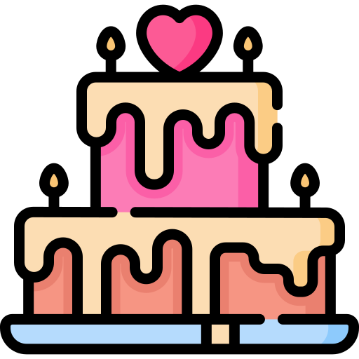
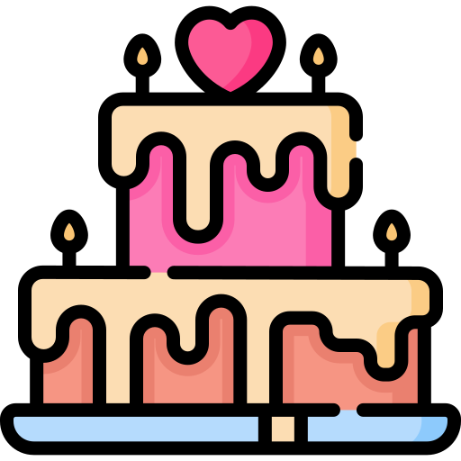

Calle Hermenegildo Galeana #106
San Antonio Acahualco, Zinacantepec
Estado de México, C.P: 51380
Por queremos pasarla increíble este día te pedimos:


 


Queremos agradecerles por el apoyo y las felicitaciones que nos han brindado durante esta etapa de preparación. Cada mensaje de aliento y gesto de cariño ha significado mucho para nosotros. Esperamos con emoción el día de nuestra unión, sabiendo que estaremos rodeados de su amor y amistad. Gracias por estar siempre con nosotros.
ATTE: Blanca & Jorge